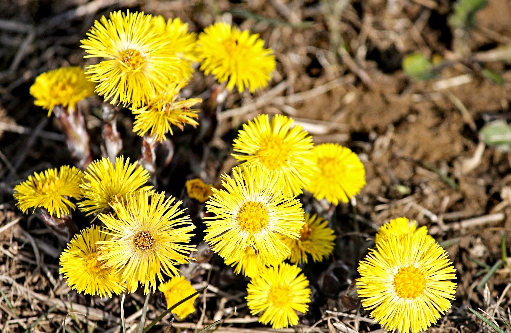
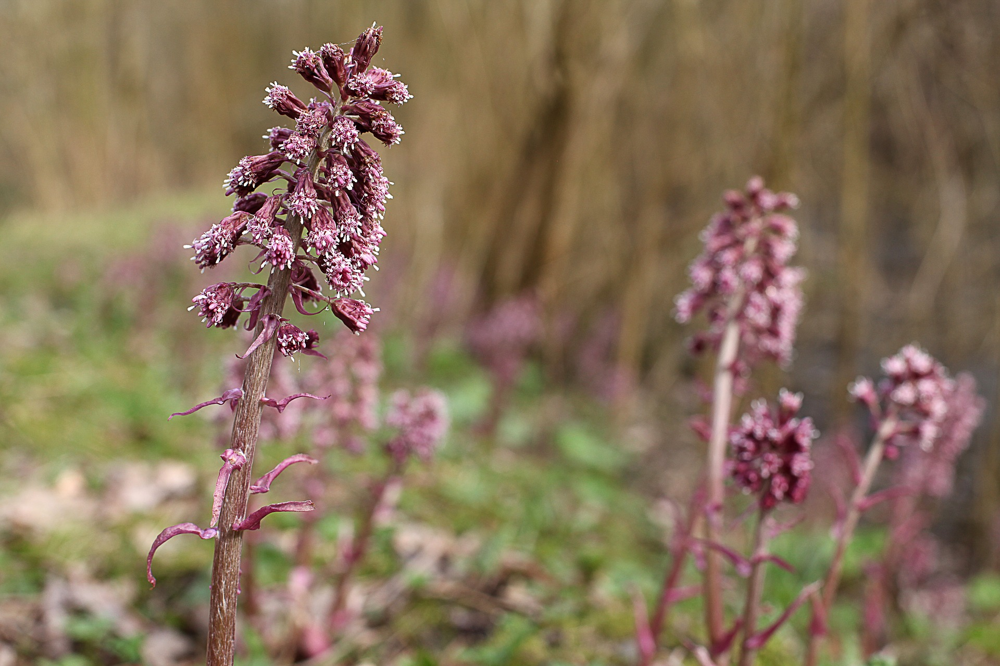
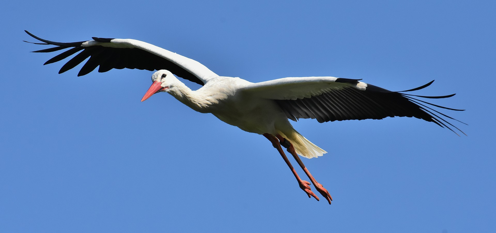
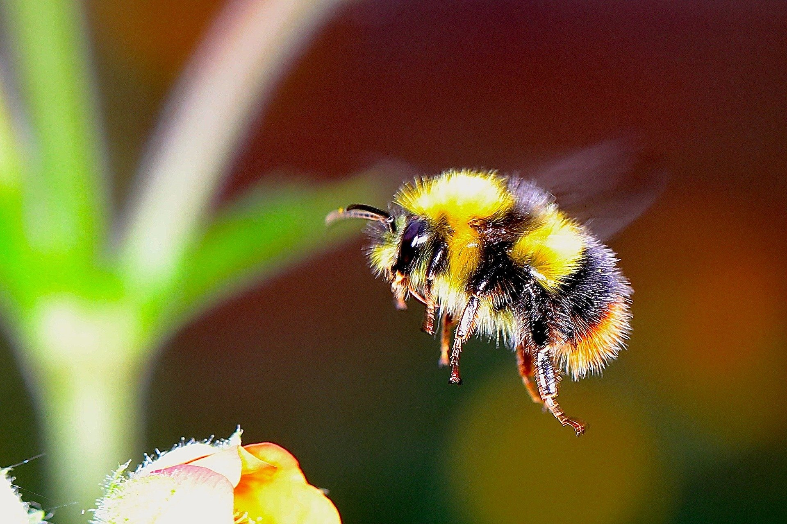
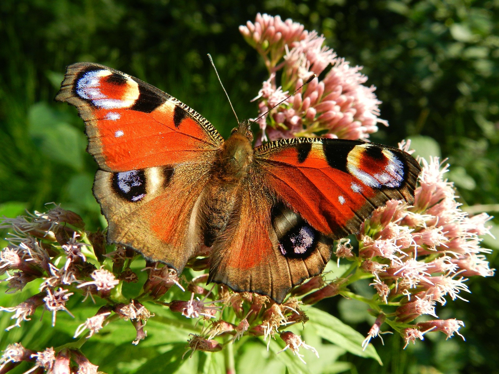
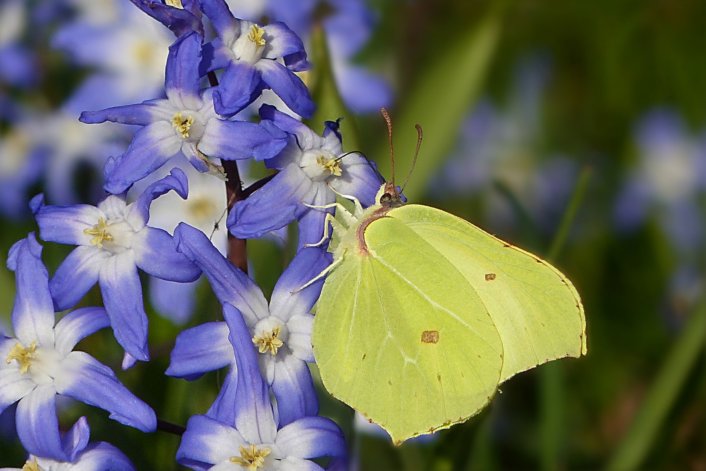
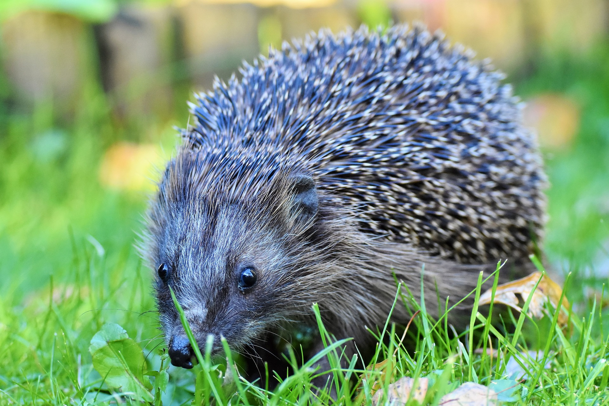

Frühlingsboten
Was sind Frühlingsboten?
Nach dem langen und kalten Winter wird es langsam wieder wärmer. Aber nicht nur die Temperatur zeigt uns, dass es langsam Frühling wird, sondern auch die sogenannten Frühlingsboten. Wenn es draußen wieder grüner wird, die ersten Blumen sprießen und die Vögel wie wild zwitschern weiß man, dass der Frühling da ist. Diese Pflanzen und Tiere die sich nach dem Winter als erstes zeigen, nennt man Frühlingsboten. Kabu zeigt dir heute ein paar davon.
Pflanzen
Zuerst zeigt euch KABU ein paar Pflanzen, die als Frühlingsboten gelten:
Die Haselnuss: Die Haselnussblüten zeigen sich schon ca. ab Februar, also sehr früh.
Das Scharbockskraut: Überall blüht jetzt das Scharbockskraut. Die Pflanze wird auch von vielen als „Butterblume“ bezeichnet. Sie kommt auf vielen Wiesen und Weiden vor und an Grabenrändern. Man findet sie aber auch unter Bäumen und Büschen.
Der Huflattich: Der Huflattich kann leicht mit einem Löwenzahn verwechselt werden. Man erkennt ihn daran, dass er viel kleiner ist. Die Blume wird oft als Hustenmittel eingesetzt.

Die Pestwurz: Man findet die Pestwurz zum Beispiel an Flussufern. Sie wird auch als „wilder Rhabarber“ bezeichnet.

Die riesigen Blätter der Pestwurz können auch super als Hut oder Regenschirm genutzt werden ;)
Tiere
Nun sind die Tiere an der Reihe. Bei ihnen gibt es auch einige Frühlingsboten.
Der Weißstorch: Der Weißstorch sucht für sein Nest gerne hohe Bäume, Dächer oder Türme.

Hummelkönigin: Im Frühling beginnt die Hummelkönigin mit dem Futtersammeln.

Schmetterlinge: Zwei Schmetterlinge fliegen im März meist als erste.
Tagpfauenauge:

Zitronenfalter:

Igel: Wenn ihr einen Igel bei euch im Garten seht, freut er sich bestimmt über ein bisschen Katzenfutter in einem Schälchen, da zu der Zeit noch sehr wenige Insekten unterwegs sind, die er fressen könnte.

Es gibt natürlich noch um einiges mehr Frühlingsboten. Am besten gehst du selbst raus in den Garten, den Park oder den Wald und entdeckt sie selbst.
Dein KABU-Team!